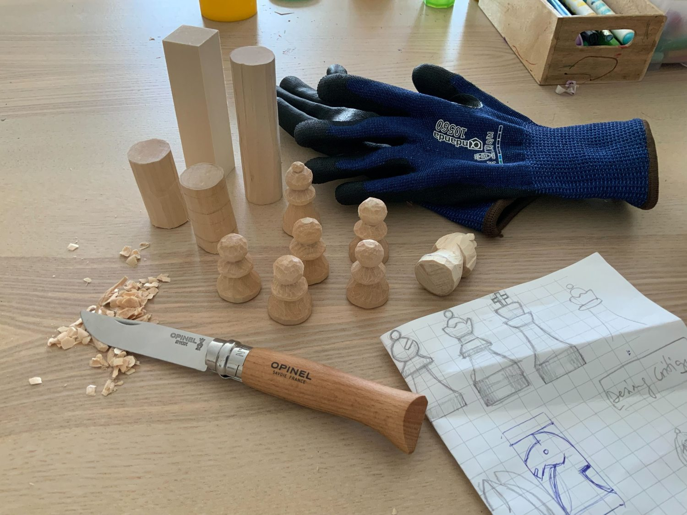

Nov 25, 2023
I like wood. I haven't done much with it in the past, but I've always wanted to try working with it properly, not just polishing sticks and making kites of cane and paper. Two years ago I stumbled across a knife in a store that I thought looked pretty cool and I felt prompted to try. An invitation to carve.
With that Opinel #8 I made a bird and a toy ship, and although the result was very clumpsy, the feeling of making those objects out of a piece of wood was really satisfying. (Also, making something physical outside the computer screen is great, for a chance).
Some months ago, I got some basswood blocks and started to carve again, and making a chess pawn seemed like a quite simple but interesting shape to make. After a couple of failed attempts I got a decent piece, and then I made another, and another.. and then a bishop, a horrible knight..
For me, the good part of making little pieces like these is that:
It is a very well-defined miniproject. The shape is known in advance and I don't get hooked detailing for hours.
It takes little time (1 to 1.5 hours per piece), so with a bit of luck I can fit in the tiny tiny spare time I have.
At the end I have a real object that is recognizable and very familiar to everybody, that can even provide an little emotional bonding if you are into the game.
I quickly realized that I was going to need more tools and materials than just a well sharped knife. I needed:
A proper carving knife. I realized that the Opinel was too big for the task I was doing. And when watching other people carving on YouTube, I saw there were other nice alternatives. I got a BeaverCraft C2. Sharper than the Opinel, and way more comfortable and adequate to carve. It really makes a difference, it allowed me to carve quicker and better, also allowing a new kind of cuts that were much harder before.
Protection gloves. Specially for your left/non-dominant hand. You can be very confident of your skills, but the chances of getting a good cut increase the more time you spent carving. And these knifes are really sharp. They saved me from very -very- serious cuts. I cannot stress this enough: If you want to carve, get some good gloves.
Also, they give you extra protection when grabbing the wood strongly. My hands -not used to hard physical work- get sore after a couple of sessions.
Protective tape. Nice to wrap around fingers and add extra cushion to the gloves in some parts.
The idea of carving a whole chess set was amazing to think about, one of those "naahh that's nuts!" but it's fantastic to see that it's almost done, and that it was actually much easier than I thought.
You know, Spain is the complete opposite of the Silicon Valley mentality. With any new project, here the typical reaction is one of rejection, criticism, and opposition:
"It's not worth it, it's too difficult, why bother doing that, it won't work, it's not going to succeed..."
I had so many of those answers in my life...
To be continued...